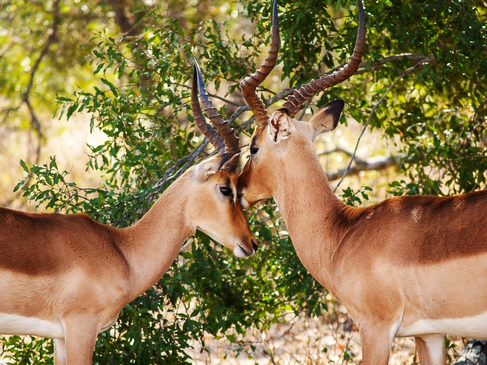

About Algonquin Park
Algonquin Park, the first provincial park in Ontario, protected from the noise and rush of civilization, this world-renowned park in Ontario is a sanctuary for the rugged beauty of the maple, pine, moose, and wolves. A Provincial Park since 1893, the 7500 square kilometers (3500 square miles) of Algonquin Park are home to a diverse and unblemished eco-system that can be found nowhere else on earth. Glaciers that receded ten thousand years ago created the distinctive rock outcroppings and spring-fed lakes of Algonquin. These mountains of ice have left the park with a rough, stark beauty. This, combined with its location, 3 hours northeast of Toronto and 2 1/2 hours west of Ottawa makes Algonquin an ideal attraction for those looking to escape the hustle of the city. This majestic park, minutes away and seen from our lakeshore, is awe-inspiring and completely peaceful with the incredible beauty of nature. Come experience the Algonquin grandeur, with all its fresh clean air, deep blue skies, rich green forests and hundreds of pristine lakes. It is impressive. Algonquin park just steps away from The Couples Resort, Algonquin's 7,630 square kilometres of forests, lakes, and rivers have assumed an almost incalculable importance as a living link with a vanishing past. Ontario's Algonquin Park and Area has more than 30 species of mammals, many are nocturnal or mostly subterranean and therefore not encountered. Listed are most commonly seen mammals, birds and reptilesin the Algonquin Park& Area. Visit Algonquin and hear for the first and only time in your lives the mournful howl of a wolf? See first-hand — in Algonquin and nowhere else — a reasonable facsimile of the wilderness that once covered all of Ontario? For more information visitAlgonquin Park Ontario For more photos of Algonquin Park widlife visit photographer Steve Dunsford Impressions of Algonquin Park
Visit: Algonquin Park Ontario

Park Activities
- 17 Hiking trails from casual to ambitious
- Canoeing from paddle to portage
- Visitor Centre information and activities
- Algonquin Art Gallery
- The colossal $10 million Visitor Centre and Gallery is just 15 minutes from the Bear Trail Couples Resort. Constructed to celebrate Algonquin's centennial in 1993, this facility is filled with world-class exhibits detailing both the natural and human history of the park. Algonquin Park contains numerous historical and archaeological resources and has inspired more than 40 books, 1,800 scientific papers, a dozen films, a symphony, and the art of Tom Thomson and the Group of Seven. It also provides many opportunities for visitors to appreciate the Park’s natural setting while enjoying numerous recreational activities.
Fishing
Algonquin Park& Area offers a variety of angling opportunities (Brook Trout,Lake Trout, Pike, Rainbow Trout, Bass, Walleye). The nutrient rich lakes and streams provide ideal habitat for sport fish species. Many lakes in the area are stocked in order to provide enhanced fishing opportunities to anglers. Each species of sport fish has a regulated open and closed season. Closed season is usually during the spawning period. For more information on fishing and regulations in Northern Ontario go to: Ministry of Natural ResourceMore information on Ontario fishing guided trips, fishing packages and more Visit Ontario FishingMore information on Hunting&Fishing in Ontario Visit Ontario Federation of Anglers &Hunters
Algonquin Galeairy Lake
Couples resort is located on the shores of Galeairy Lake, with direct access to Algonquin Park. Originally named Long lake which was renamed to Galeairy Lake because the lake borders Nightengale and Airy townships. Galeairy Lake is 11 kilometres (7 miles) long, land locked and extends mostly inside the boundaries of Algonquin Park . Explore the many secluded coves by canoe or kayak and search for loons, beaver, otter and moose. Pull up on shore, have a picnic and go for a swim. Swimming in this lake is great. It is very clean and safe, with water temperatures hitting 25C (78F) by the end of July. Typically the lake temperature is above 18C (70F) from the third week of June to the first week of September.